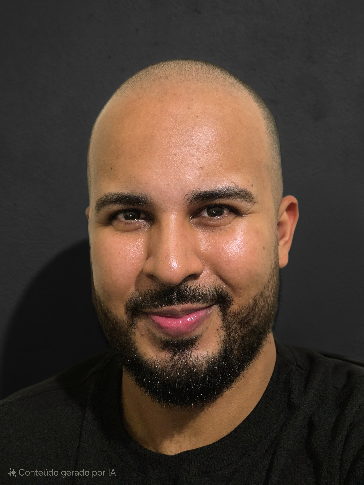

Iago Trindade Souza
Estudante de Engenharia de Software
2+
Anos de
Estudo
Estudo
10+
Projetos
Pessoais
Pessoais
Olá!
Um pouco mais sobre mim
Sou estudante de Engenharia de Software no Centro Universitário Internacional UNINTER, com base em Vitória, Espírito Santo. Minha afinidade com computadores e com a compreensão de seu funcionamento, que começou como um hobby, evoluiu para a escolha da minha carreira.
Fora do ambiente acadêmico, cultivo a paixão nacional pelo futebol e dedico-me ao ciclismo, meu esporte predileto.
Principais Habilidades
HTML/CSS
JavaScript
React